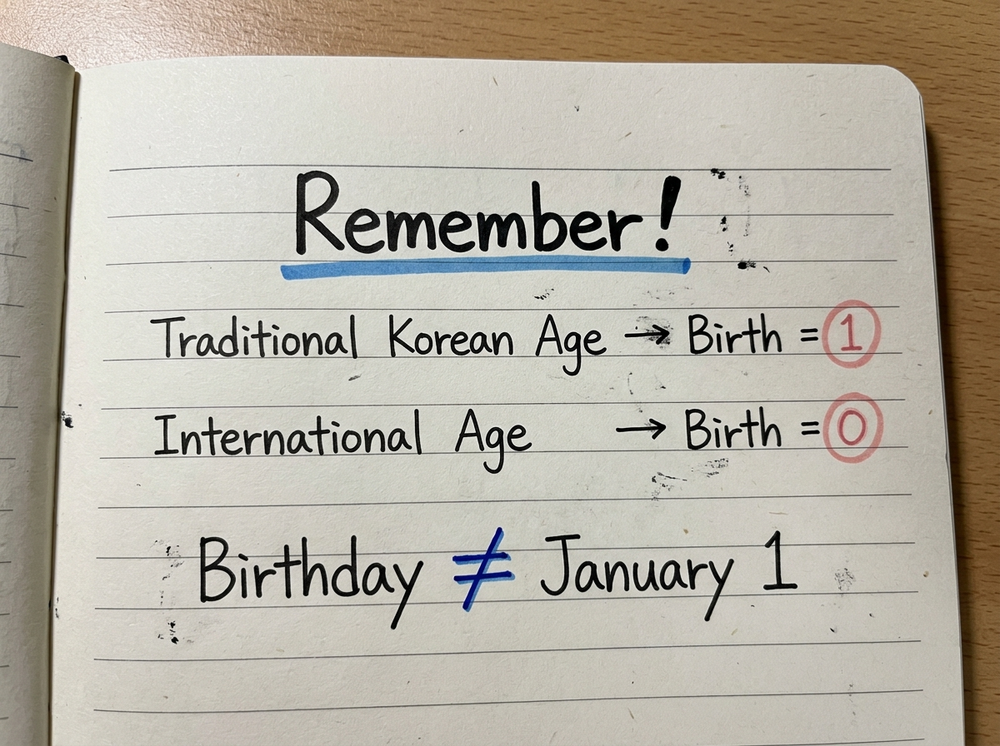
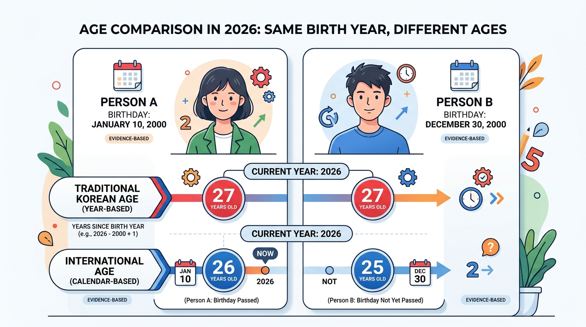

What is the Difference Between Korean Age and International Age?
Traditional Korean age and international age count age differently. In the traditional Korean system, a baby was considered one year old at birth and everyone gained an additional year together on January 1st. International age starts at zero at birth and increases strictly on each individual birthday. As a result, traditional Korean age is always one or two years higher than international age.
| Age System | Age Starts At | When Age Increases | Legal Status in South Korea |
|---|---|---|---|
| International Age (만 나이) | 0 at birth | Each personal calendar birthday | Official Standard (Mandatory since June 28, 2023) |
| Traditional Korean Age (세는나이) | 1 at birth | Every January 1st (New Year's Day) | Informal & cultural conversation only |
Depending on where your birthday falls relative to the current date, your traditional Korean age is either 1 year older (if your birthday has passed this year) or 2 years older (if your birthday has not yet occurred).
The Key Difference in One Example: A Person Born on December 31
To grasp the arithmetic immediately, you do not need complicated formulas. You only need to follow what happens to a baby born on the final day of the year: December 31, 2000.
Watch how the two reckoning systems progress across their first 13 months of life:
🇰🇷 Traditional Korean Reckoning
🎂 International Solar Reckoning
Notice that on January 1, 2001—when the infant was barely 24 hours old—their traditional Korean age was already 2 years old, while their international age was 0. This clean example illustrates why international observers often find Korean age perplexing.
Why Can Korean Age Be Two Years Higher?
The gap between the two systems fluctuates because they increment on completely different calendar schedules. Below is an interactive visual timeline tracing this divergence over time:
Infant is born. Traditional system assigns 1 year of completed gestation. International system starts the stopwatch at zero.
Midnight strikes. The Gregorian year advances. Everyone in Korea collectively adds 1 year. The baby turns 2, while international age remains 0.
Exactly 365 days after delivery, the baby reaches their first international birthday. International age finally increments to 1. Korean age does not move.
Another New Year begins. The child gains another year in Korean reckoning, reaching age 3, while international age stays 1 until next December.
This timeline reveals the core rhythm: January 1st pulls Korean age ahead by 2 years, and your personal birthday closes the gap back to 1 year.
Korean Age vs International Age at a Glance
Here is a direct feature-by-feature comparison between traditional Korean age and the international standard:
| Feature | Traditional Korean Age (세는나이) | International Age (만 나이) |
|---|---|---|
| Age at birth | 1 year old | 0 years old |
| Birthday matters for annual increase | No (age advances on Jan 1) | Yes (advances on birthday only) |
| Age increases on January 1st | Yes (everyone advances together) | No (advances on personal birthday) |
| Age increases on birthday | No (traditional calculation) | Yes (standard biological anniversary) |
| Maximum difference | Up to 2 years older | Baseline reference (0 difference) |
| Official legal age in South Korea | No (abolished for official use) | Yes (standard since June 28, 2023) |
| Common cultural usage today | Yes (social etiquette, casual talk) | Yes (contracts, medicine, administration) |
When Is Korean Age One Year Older?
Traditional Korean age is exactly 1 year older than international age whenever your birthday has already taken place in the current calendar year.
The Rule: If Today's Date ≥ Your Birthday This Year → Korean Age = International Age + 1
Worked Example: Suppose someone was born on March 15, 2000. When evaluating their age on August 1, 2026:
- Their March 15th birthday has already passed in 2026.
- Their international age is
2026 − 2000 = 26 years old. - Their traditional Korean age is
2026 − 2000 + 1 = 27 years old. - Difference: Exactly 1 year.
Because their birthday already occurred, the international count gained its annual +1 increment, leaving only the original 1-year birth credit difference between the two systems.
When Can Korean Age Be Two Years Older?
Traditional Korean age is 2 years older than international age whenever your birthday has not yet occurred in the current calendar year.
The Rule: If Today's Date < Your Birthday This Year → Korean Age = International Age + 2
Worked Example: Suppose someone was born on December 10, 2000. When evaluating their age on August 1, 2026:
- Their December birthday is still four months away.
- Their international age is still
2026 − 2000 − 1 = 25 years old. - Their traditional Korean age turned
2026 − 2000 + 1 = 27 years oldback on January 1st. - Difference: Exactly 2 years.
In this window, Korean age has already advanced on January 1st, while international age has not yet received its annual birthday increment. This two-year gap is what triggers queries like "why is Korean age different from American age?" and "why can Korean age be two years older?"
Handwritten Study Notes: The 1 vs 2 Year Gap Explained
A simple visualization makes the math memorable. The handwritten study note below summarizes the three fundamental counting rules that create the 1-year and 2-year divergence:

Korean Age vs American Age: Are They the Same as International Age?
In many online searches and social media discussions, users frequently search for "korean age vs american age" or "american age vs korean age". It is important to clarify that the United States does not maintain a distinct, proprietary age-counting system.
In everyday language, "American age" simply refers to the birthday-based completed solar age method universal across the Western world (technically known as international full age or 만 나이 in Korean). When Americans say they are 25, they mean exactly 25 full solar years have elapsed since their birth.
| Life Stage Example | Traditional Korean Age | American / International Age* | Observed Gap |
|---|---|---|---|
| Newborn Baby | 1 year old | 0 years old | +1 year |
| First Birthday Celebration | 2 years old | 1 year old | +1 year |
| Young Adult (Age 20) | 21 or 22 years old | 20 years old | +1 or +2 years |
| Milestone Adult (Age 30) | 31 or 32 years old | 30 years old | +1 or +2 years |
| Midlife (Age 50) | 51 or 52 years old | 50 years old | +1 or +2 years |
*Illustrative comparison: exact traditional Korean age relative to American/international age depends on whether the birthday has occurred in the ongoing calendar year.
Why Are Korean and International Ages Different?
The philosophical reason the two systems produce divergent results boils down to what each culture historically intended to measure:
🇰🇷 Traditional Korean Reckoning
Focus: Calendar years of life experienced.
Measures which chapter of life the society is collectively navigating together.
🌍 International Solar Reckoning
Focus: Precise elapsed astronomical duration.
Measures the exact number of 365.24-day orbits completed around the Sun.
For an exhaustive deep dive into Confucian seniority, peer kinship groups (donggap), and lunar historical transitions, explore our pillar guide: Korean age explained: What is it and how does it work? →
Does Your Birthday Matter When Comparing Korean and International Age?
When calculating Korean age in isolation, your birthday does not matter because age increments strictly on January 1st. However, when comparing Korean age against international age, your birthday is the single most decisive variable.
To see why, consider two friends born in the exact same birth year (2000):
- Person A: Born on January 5, 2000
- Person B: Born on December 30, 2000
If you ask them their ages on July 1, 2026:
| Comparison Dimension | Person A (Jan 5 Birthday) | Person B (Dec 30 Birthday) |
|---|---|---|
| Birth Year | 2000 | 2000 |
| Has birthday passed by July 1, 2026? | Yes (passed in January) | No (coming in December) |
| International Age | 26 years old | 25 years old |
| Traditional Korean Age | 27 years old | 27 years old |
| Gap Between Systems | 1 year difference | 2 years difference |
Even though Person A and Person B are lifelong peers with the exact same traditional Korean age (27), Person B experiences a two-year gap against international age for nearly the entire calendar year.
Two-Person Birthday Comparison Infographic
The visual below illustrates how Person A and Person B share identical traditional Korean ages throughout the entire year, while their international ages diverge based on birthday timing:

How Are the Two Ages Calculated?
While the conceptual divergence is rich, the underlying arithmetic formulas are concise:
International Age Formula
Current Year − Birth Year (−1 if birthday not reached)
Calculates completed 365-day solar revolutions elapsed between the birth date and today's date.
Traditional Korean Age Formula
Current Year − Birth Year + 1
Calculates total calendar years of existence credited, ignoring the birth month and day.
Need a step-by-step math walkthrough? For worked arithmetic steps, manual calculation rules, and practice examples, visit our dedicated guide: How to Calculate Korean Age: Step-by-Step Guide →
Worked Milestone Examples for the Year 2026
To see how birth dates throughout the year behave under both reckoning systems in 2026, review these four milestone examples:
Example 1: Born January 10, 2000
Example 2: Born June 15, 2000
Example 3: Born December 30, 2000
Example 4: Born December 31, 2000
The 3 Things to Remember
Whenever you need to explain the difference between Korean age and international age to friends or colleagues, remember these three core facts:
International Age Starts at 0
You begin life at zero completed years. You only advance when your individual calendar anniversary arrives.
Traditional Korean Age Started at 1
Every infant was considered one year old on the day of delivery, counting their inaugural year of existence.
Korean Age Incremented on Jan 1st
Everyone gained a year simultaneously at New Year midnight, rather than waiting for their personal birth date.
These three principles explain why traditional Korean age is always one or two years higher than international age.
What Changed in South Korea in 2023?
For decades, South Korea operated with three competing age systems simultaneously: Traditional Korean Age (세는나이), Year Age (연나이), and International Age (만 나이). This created confusion in healthcare dosing, pension eligibility, contractual disputes, and international travel paperwork.
To eliminate this friction, the South Korean National Assembly passed landmark legislation amending the Civil Act and the General Act on Public Administration. On June 28, 2023, South Korea officially adopted the international full-age system as the exclusive statutory standard across all administrative, judicial, and healthcare domains.
What this means today:
- Official Documents: Passports, driver's licenses, government benefits, hospital records, and employment contracts strictly use international age.
- Social and Cultural Life: In casual speech, social hierarchy, peer group matchmaking, and K-pop fandoms, many Koreans still reference traditional age or Year Age when establishing conversational honorifics (jondaenmal).
To understand the full statutory timeline and the specific exceptions retained for military conscription and alcohol purchases, read our detailed analysis: Did Korea Change Its Age System? Understanding the 2023 Change.
Korean Age vs International Age Reference Table (2026)
Use this reference table to compare traditional Korean age with international age across birth cohorts for 2026:
| Birth Year | Traditional Korean Age (2026) | International Age in 2026* | Observed Age Difference |
|---|---|---|---|
| 1980 | 47 years old | 45 or 46 years old | +1 or +2 years |
| 1985 | 42 years old | 40 or 41 years old | +1 or +2 years |
| 1990 | 37 years old | 35 or 36 years old | +1 or +2 years |
| 1995 | 32 years old | 30 or 31 years old | +1 or +2 years |
| 2000 | 27 years old | 25 or 26 years old | +1 or +2 years |
| 2005 | 22 years old | 20 or 21 years old | +1 or +2 years |
| 2010 | 17 years old | 15 or 16 years old | +1 or +2 years |
| 2015 | 12 years old | 10 or 11 years old | +1 or +2 years |
| 2020 | 7 years old | 5 or 6 years old | +1 or +2 years |
| 2025 | 2 years old | 0 or 1 year old | +1 or +2 years |
| 2026 | 1 year old | 0 years old | +1 year |
*Note: Exact international age depends strictly on whether the individual's calendar birthday has already occurred in 2026.
What's Your Korean Age Right Now?
Enter your exact birth date into our Korean Age Calculator to compare your traditional Korean age, official legal age, milestone dates, and cultural relationship title instantly.
Frequently Asked Questions About Korean Age vs International Age
Clear, direct answers to the most common comparison questions:
Is Korean age the same as international age?
No. International age starts at 0 at birth and increments on each birthday. Traditional Korean age starts at 1 at birth and increments on January 1st. Consequently, traditional Korean age is always 1 or 2 years higher than international age.
Why is Korean age different from American age?
In online searches, 'American age' refers to the birthday-based completed solar age system used in the United States and worldwide. It differs from traditional Korean age because Korean age counted a baby as 1 at birth and incremented everyone's age together on New Year's Day.
Why can Korean age be two years older?
Korean age is 2 years older when your birthday has not yet occurred in the current calendar year. You received 1 year at delivery, gained another on January 1st, while your international age has not yet received its annual birthday increment.
Is Korean age one or two years older?
It depends on whether your birthday has passed this year. After your birthday passes, Korean age is 1 year higher. Before your birthday arrives, Korean age is 2 years higher.
Does your birthday matter in Korean age?
In the traditional calculation itself, no—age increments communally on January 1st. But when comparing Korean age against international age, your birthday determines whether you are currently 1 year or 2 years older.
Do Koreans still use Korean age?
For legal, medical, and administrative paperwork, no: South Korea officially transitioned to international age on June 28, 2023. However, traditional age remains popular in informal social dynamics, school peer groups, and everyday conversation.
What is my Korean age compared with my international age?
If your birthday has passed this year: Korean Age = International Age + 1. If your birthday has not yet passed: Korean Age = International Age + 2. You can check your exact numbers on our Korean Age Calculator.
What is the difference between Korean age and international age?
The difference lies in the starting integer and the advancement trigger. International age starts at 0 and advances on your birthday; traditional Korean age starts at 1 and advances on January 1st.
Compare Your Korean & International Age
Enter your birth date in our precision calculator to instantly see your traditional Korean age, official legal age, Korean honorific title, and milestone timeline.
🇰🇷 Calculate My Korean Age Now →